Reproducción en seres vivos
Sistemas de reproducción en seres vivos
Reproducción asexual en plantas y animales
Los seres vivos intercambian materia y energía con el medio para llevar a cabo la función de nutrición; mediante la función de relación captan la información del entorno, la procesan y elaboran respuestas; y con la reproducción, forman nuevos individuos.
La función de reproducción consiste en la formación de nuevos organismos semejantes a sus progenitores. Los descendientes compensan las células producidas por la muerte de individuos de la especie; por tanto, aunque la reproducción no es indispensable para la vida de un organismo, lo es para asegurar la supervivencia de su especie a través del tiempo. Los seres vivos han desarrollado diversos métodos de reproducción.
• En los organismos unicelulares, todo el ser participa en la reproducción; su única célula se divide para formar dos células hijas.
• En los organismos pluricelulares, la división de cada una de sus células permite al individuo crecer, renovar y reparar sus tejidos. Para la formación de un nuevo ser vivo, precisan estrategias más complejas que los unicelulares. Existen dos tipos de reproducción:
• Reproducción asexual: se da a partir de un fragmento del progenitor o de unas células de este (espora), de ellas se genera el nuevo organismo.
• Reproducción sexual: para la formación del nuevo individuo se necesita la unión de dos células especializadas, llamadas células reproductoras o gametos. El resto de las células que integran los organismos con reproducción sexual son las células somáticas o vegetativas, las cuales forman los distintos tejidos. A continuación, vamos a describir los dos tipos de reproducción que tienen lugar en los organismos pluricelulares.
Reproducción asexual
Se basa en el desarrollo de un nuevo individuo a partir de una o varias células del progenitor. El descendiente es un individuo completo idéntico al progenitor. Existen dos tipos de reproducción asexual: la reproducción asexual vegetativa y la reproducción asexual por esporas.
Reproducción asexual vegetativa
En la reproducción asexual vegetativa, el descendiente se genera a partir de un grupo de células del progenitor. Comprende diferentes estrategias reproductivas:
• Gemación: En este tipo de reproducción, un conjunto de células se diferencia sobre la superficie del organismo, como un abultamiento, y crece por repetidas divisiones celulares hasta formar otro individuo. El nuevo ser puede permanecer unido al progenitor formando una colonia o bien desprenderse.
• Escisión: En esta estrategia el individuo adulto se fragmenta longitudinalmente o transversalmente, dando lugar, al menos, a dos individuos. Se puede dar en cnidarios (medusas, anémonas y corales), en equinodermos (estrellas, dólares, ofiuras y erizos de mar) y en anélidos (gusanos segmentados). En los escifozoos ( medusas e hidromedusas), la escisión recibe el nombre de estrobilación.
• Fragmentación: Se basa en la generación de nuevos individuos a partir de un fragmento, dando lugar a dos individuos. Se da en vegetales. En jardinería se utiliza la multiplicación por esquejes. A continuación, presentamos las formas más importantes de fragmentación:
Estolones: Son ramas que debido a su crecimiento llegan a tocar el suelo, generando un nuevo individuo al enraizar.
Bulbos: Son tallos subterráneos de forma cónica que almacenan sustancias. En las hojas más cercanas al bulbo se originan nuevos bulbos, capaces de originar una planta.
Rizomas: Son tallos alargados que crecen bajo el suelo en forma horizontal, generando, cada cierta distancia, un nuevo individuo de crecimiento vertical.
Tubérculos: Son tallos subterráneos que adoptan una forma algo esférica y almacenan en su interior sustancias de reserva. En su superficie desarrollan yemas, las que son capaces de originar una nueva planta.
En ocasiones, estos mecanismos tienen otro tipo de finalidad, además de la reproducción:
• La formación de yemas no siempre implica la reproducción del individuo. En las plantas, las yemas están constituidas por meristemos y son responsables del crecimiento en longitud del tallo y del desarrollo de ramas, hojas y flores.
• Por su parte, la escisión permite la regeneración de órganos o tejidos. En estos casos, no tiene finalidad reproductiva. A partir de fragmentos de raíces, tallos u hojas, algunas plantas pueden regenerar un organismo completo. Estos fragmentos reciben el nombre de esquejes. Aunque de modo natural no se considere una técnica reproductiva, esta capacidad ha sido utilizada por el ser humano para la multiplicación de plantas.
• Regeneración: No se considera un proceso de reproducción del individuo entero, porque solo se regenera una parte de los tejidos perdidos por los animales cuando se encuentran bajo una situación de peligro. Por ejemplo, los artrópodos pueden regenerar las patas, las antenas; los reptiles, la cola, etcétera.
Reproducción asexual por esporas o esporulación
La espora es una estructura resistente, que puede ser haploide o diploide. En el caso de la esporulación asexual, las esporas se generan por mitosis y se llaman mitósporas. Las mitósporas pueden generar un nuevo individuo, idéntico al progenitor, por divisiones celulares sucesivas. Este tipo de reproducción se da en algunas algas, en pteridófitos, en briófitos y en algunos hongos.
Reproducción sexual en animales
Reproducción sexual
Es la forma de reproducción más frecuente en los organismos pluricelulares.
Se desarrolla en las siguientes etapas:
• Gametogénesis: es el proceso de formación de las células reproductoras o gametos, que se caracteriza por contener la mitad de cromosomas que una célula somática.
Si el número de cromosomas de una célula somática se denomina dotación diploide y se representa 2n, el de un gameto recibe el nombre de haploide y se representa n. El número de cromosomas es característico de cada especie.
• Fecundación: Es la unión de gametos para formar una célula nuevamente diploide (2n) y recibe el nombre de célula huevo o cigoto.
• Desarrollo embrionario: Son las mitosis sucesivas del cigoto hasta transformarse en un individuo semejante a los progenitores.
Organismos - Dotación Diploide - Dotación Haploide
Maíz 20 10
Pino 24 12
Patata 48 24
Perro 78 39
Mosquito 6 3
Ser humano 46 23
Gametogénesis
Es la formación de las células reproductoras o gametos, que contienen la mitad de cromosomas que una célula somática.
Nombre de los gametos en los grupos taxonómicos que presentan oogamia.
Grupo taxonómico - Gametos femeninos - Gametos masculinos
Briófitos y pteridófitos Ovocélula Espermatozoide
Espermatófitos Ovocélula Célula espermática
Animales Óvulo Espermatozoide
Hablamos de isogamia cuando todos los gametos generados por los individuos de una especie son iguales entre sí. En la anisogamia, los gametos presentan diferente tamaño: los femeninos son mayores y se llaman macrogametos y los masculinos son menores y se llaman microgametos.
Finalmente, en la oogamia, los gametos son de diferente tamaño y forma; su nombre varía según se trate de especies vegetales o animales.
La gametogénesis tiene lugar a partir de células precursoras presentes en los órganos sexuales; estas células, llamadas células madre o precursoras de gametos, entran en división por mitosis y dan lugar a los gametos por meiosis.
La meiosis es un proceso de división celular reduccional, ya que las células hijas tienen la mitad de la dotación cromosómica de la célula madre: pasan de células diploides a células haploides. Es una fuente de variabilidad genética.
La meiosis consta de dos divisiones: en la primera se separan los cromosomas homólogos, reduciéndose el número de cromosomas a la mitad, y la segunda división es muy similar a la mitosis.
Los organismos que solo producen un tipo de gametos reciben el nombre de unisexuales. Se diferencia entre machos y hembras, que pueden ser morfológicamente parecidos o presentar diferencias externas considerables; en este último caso, se habla de dimorfismo sexual.
Los organismos que producen ambos tipos de gametos son llamados hermafroditas.
A continuación, describimos el proceso de gametogénesis en los vertebrados, el cual se realiza con ligeras diferencias en testículos y en ovarios.
Espermatogénesis masculina en los vertebrados
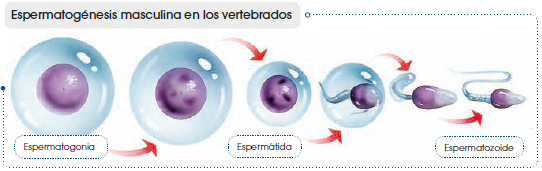
• Las células precursoras se denominan espermatogonias y son diploides (2n).
• Después de la meiosis obtenemos cuatro espemátidas que son haploides.
• Cada espermátida dará lugar a un espermatozoide, después de un proceso de cambio morfológico llamado diferenciación.
• Por tanto, de cada espermatogonia se obtienen cuatro espermatozoides.
Gametogénesis femenina en los vertebrados
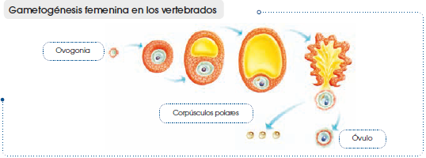
• Las células precursoras se denominan ovogonias (2n).
• Cada ovogonia se divide por meiosis originando unas células intermediarias denominadas ovocitos.
• Los ovocitos dan lugar al óvulo (n), que contiene la mayor parte del citoplasma, y a otras tres células más pequeñas de nominadas corpúsculos polares (n), que normalmente degeneran.
Comparación entre la reproducción asexual y la sexual
Ambas procesos reproductivos presentan características diferentes.
Reproducción asexual
• En el proceso de reproducción participa un solo individuo.
• No se requieren células especializadas, únicamente células capaces de dividirse activamente para formar un ser pluricelular.
• Todas las divisiones celulares se realizan mediante mitosis; por tanto, todas las células resultantes son genéticamente iguales y el nuevo individuo es genéticamente idéntico a su progenitor.
Reproducción sexual
• Participan dos individuos diferentes de la misma especie.
• Se requiere la participación de células especializadas, llamadas gametos, que se unen mediante la fecundación para dar lugar al cigoto.
• En algún momento del ciclo biológico se lleva a cabo la meiosis. El descendiente es genéticamente diferente a los progenitores, ya que la mitad de sus cromosomas proceden de un progenitor y la otra mitad de cromosomas del otro.
En el caso de los animales, la reproducción asexual es frecuente en aquellos que viven fijos al sustrato o tienen pocas posibilidades de encuentro con otros de su misma especie.
A partir de la comparación entre ambos tipos de reproducción, observamos que la reproducción asexual es un mecanismo más sencillo que la reproducción sexual, ya que implica a un solo individuo y, por tanto, supone un menor gasto de energía y de tiempo.
En este proceso, la población se incrementa rápidamente, siempre y cuando el ambiente sea favorable y de características estables.
Por su parte, la reproducción sexual es más compleja; en esta intervienen dos individuos de la misma especie y de sexos opuestos, que previamente se han encontrado. Por tanto, implica un mayor gasto de energía y de tiempo.
En este caso, la población crece muy despacio, pero en cada generación se producen nuevas combinaciones del material hereditario que aumentan las posibilidades de adaptación de los individuos a distintos ambientes.
Desarrollo embrionario animal
Una vez que se ha llevado a cabo la fecundación, el cigoto inicia una serie de divisiones mitóticas y de posteriores diferenciaciones celulares hasta constituir un organismo pluricelular similar a sus progenitores.
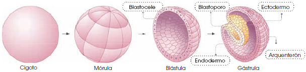
En las primeras fases, después de la fecundación, las sustancias contenidas en el citoplasma del óvulo fecundado nutren a las células descendientes de este, hasta el momento en que se implanten en la estructura encargada de proteger y alimentar al embrión.
Por esta razón, en la mayoría de las especies el óvulo contiene una gran cantidad de sustancias nutritivas y es de un tamaño mucho mayor al espermatozoide.
De acuerdo con el lugar del desarrollo del embrión, se presentan las siguientes clasificaciones:
Ovíparos
• El desarrollo embrionario se produce en el interior de un huevo gracias a las sustancias nutritivas que contiene y que forman el vitelo nutritivo. Estas sustancias nutren al embrión durante su desarrollo.
• En el caso de los animales acuáticos, para evitar que los huevos sean desplazados por el agua, estos poseen mecanismos de flotación, o bien, filamentos. Los huevos depositados en el medio terrestre están recubiertos de una envoltura protectora para evitar su desecación.
• Son ovíparos los insectos, algunos peces, los anfibios, algunos reptiles, las aves y un único mamífero: el ornitorrinco.
Vivíparos
• El embrión se desarrolla en el interior del útero materno, donde la placenta le proporciona protección y alimento. La placenta es un tejido formado durante el embarazo y sirve para intercambiar nutrientes y material de desecho entre la sangre materna y la fetal.
• Son vivíparos ciertos reptiles, algunos peces cartilaginosos y todos los mamíferos con excepción del ornitorrinco.
Ovovivíparos
• El desarrollo embrionario se produce dentro de un huevo, que a su vez es protegido en el cuerpo de la madre.
• Son ovovivíparos algunos peces y algunos reptiles como la culebra.
Existen algunos ovíparos, como los insectos y los anfibios, cuyos huevos no contienen suficiente vitelo nutritivo para alimentar al embrión durante todo el proceso de desarrollo. Por ello, el embrión abandona el huevo antes de completar dicho proceso y nace en estado larvario. La larva se alimenta de sustancias del medio para seguir su proceso de metamorfosis hasta convertirse en adulto.
Ciclos biológicos
Un ciclo biológico es el conjunto de acontecimientos que tienen lugar en un organismo desde la formación del cigoto hasta que se vuelve a reproducir. Los ciclos biológicos implican, excepto en la mayoría de los animales, estrategias dobles de reproducción. Es decir que, en su ciclo biológico, el organismo alterna la reproducción sexual con la asexual.
En la reproducción sexual intervienen siempre dos procesos fundamentales, la meiosis y la fecundación. La meiosis reduce a la mitad n el número de cromosomas y la fecundación reúne nuevamente el número de cromosomas diploide 2n. Ello implica que durante el ciclo biológico se presenten tanto células haploides como diploides.
La dotación cromosómica de los individuos adultos, y el momento en el que tienen lugar la meiosis y la fecundación, distinguen tres tipos de ciclo biológico:
• Ciclo haplonte: El organismo adulto está constituido por células haploides y solo el cigoto es diploide. La meiosis ocurre después de la fecundación, una vez formado el cigoto, por ello se denomina meiosis zigótica.
• Ciclo diplonte: El individuo adulto está constituido por células diploides y solo realiza la meiosis para formar gametos haploides destinados a participar en la fecundación. Es una meiosis gametogénica.
• Ciclo diplo-haplonte: La especie presenta, en su ciclo de vida, dos individuos adultos morfológicamente diferentes, uno haploide y otro diploide. La meiosis se da en el individuo diploide para generar las esporas. Se trata por tanto de una meiosis esporogénica.
Ciclo haplonte del alga Chlamydomonas
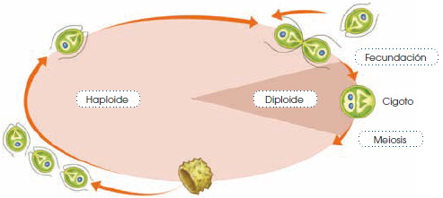
• El organismo es haploide y se reproduce asexualmente por divisiones mitóticas.
• En ocasiones, dos células se unen y se produce la fecundación.
• El cigoto diploide presenta una cubierta muy gruesa que le permite sobrevivir si las condiciones no son favorables.
• En este cigoto tiene lugar la meiosis y se originan cuatro células haploides, que constituyen cuatro individuos adultos y cierran el ciclo.
Presentan este tipo de ciclo los protoctistas, algunas algas y algunos hongos.
Ciclo diplonte del Cnidario Aurelia
• El pólipo es un organismo diploide que se reproduce asexualmente alternando la gemación y la escisión, y da lugar a medusas que se apilan encima de él. Una vez que se desprenden, crecen hasta convertirse en adultas.
• Las medusas adultas, según sean hembra o macho, producen por meiosis los gametos haploides, óvulos y espermatozoides y los liberan en el agua.
• La fecundación origina un cigoto diploide, del que se desarrolla una larva denominada plánula.
• La plánula, tras sufrir una serie de cambios, se transforma en un pólipo. Este ciclo se da en algas, hongos y animales invertebrados.
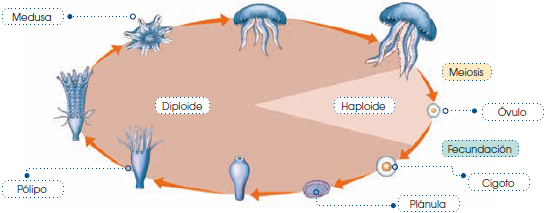
El ciclo que mostramos a continuación es un ciclo diplonte como el anterior, pero existe una gran diferencia entre ambos: en el primero, se produce una alternancia entre la reproducción sexual y asexual; mientras que, en el segundo, solo tiene lugar la reproducción sexual:
Ciclo diplonte del mamífero Mus Musculus
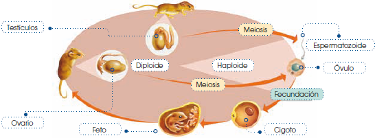
• El organismo es diploide, cuando este alcanza la madurez sexual tiene lugar la meiosis y produce los gametos haploides.
• Tras la fecundación, el cigoto diploide origina un ratón hembra o macho, que se reproducirá sexualmente cuando sea adulto.
Esto se da en animales invertebrados y vertebrados.
Ciclo diplo-haplonte del helecho Pteridium aquilinum
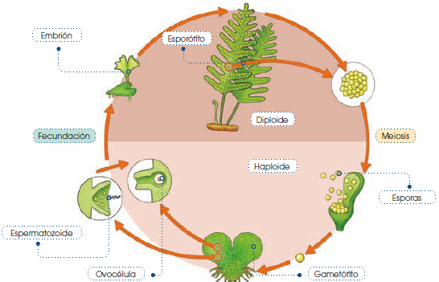
• Existen dos tipos de individuos adultos: el gametófito y el esporófito.
• El gametófito es haploide y produce gametos por mitosis en el gametangio.
• Durante la fecundación, dos gametos procedentes de dos gametófitos diferentes se fusionarán y dan origen a un cigoto diploide.
• Al crecer, el cigoto dará lugar al esporófito, que es diploide y produce esporas haploides mediante la meiosis esporogénica.
• Las esporas son estructuras de dispersión que, al germinar y crecer, darán lugar a un nuevo gametófito.
Existen ejemplos de este tipo de ciclo en algas, plantas y hongos.
Gametangio masculino - Plantas fanerógamas -
Gametangio masculino Anteridio Grano de polen
Gameto masculino Anterozoides Célula espermática
Gametangio femenino Arquegonio Saco embrionario
Gameto femenino Ovocélula Ovocélula
Fecundación
Es la fusión del gameto femenino con el gameto masculino y da lugar a la célula huevo o cigoto, el cual es diploide debido a la fusión de los dos núcleos haploides.
La fecundación se denomina cruzada cuando, de dos individuos distintos, se unen un gameto femenino y uno masculino.
Los organismos hermafroditas poseen mecanismos que evitan la autofecundación para producir la fecundación cruzada, como sucede en los siguientes casos:
• Los órganos productores de gametos maduran en momentos distintos. Por ejemplo, en los lirios, los granos de polen maduran antes que los sacos embrionarios.
• En otros casos, la situación de los órganos sexuales impide la autofecundación. Así ocurre en algunos anélidos que tienen los órganos reproductores masculinos y femeninos en segmentos sucesivos.
En los animales se distingue entre fecundación externa o interna, según el lugar donde se produzca la unión de los gametos masculinos y los femeninos.
• En la fecundación externa, óvulos y espermatozoides son liberados en el agua y se requiere la formación de miles de gametos para asegurar que unos pocos se fecunden. Es un tipo de fecundación propio de invertebrados acuáticos y de peces.
Los anfibios, a pesar de presentar fecundación externa, realizan acoplamiento, para favorecer la sincronización en la expulsión de los gametos; de esta forma, se asegura el mayor número posible de fecundaciones.
• La fecundación interna supone la fusión de los gametos en el interior del cuerpo de un individuo progenitor, frecuentemente la hembra.
En este caso el macho deposita los espermatozoides en las vías genitales de la hembra, proceso que tiene lugar durante la cópula.
La fecundación interna es el recurso más utilizado por los animales adaptados al medio terrestre, donde la falta de agua no posibilita la dispersión ni el encuentro de los gametos y provoca su desecación.
En algunos moluscos y artrópodos no se produce la cópula y el macho deposita sus espermatozoides en un espermatóforo, el que es recogido por la hembra e introducido en su cuerpo.
La fecundación interna tiene más ventajas que la fecundación externa. Estas son:
• La producción de pocos gametos, en comparación con los que se producen en la fecundación externa, supone un ahorro de energía.
• La supervivencia de estos gametos es mayor, ya que no están expuestos a condiciones ambientales desfavorables o depredadoras.
• Las probabilidades de encuentro de los gametos y, por tanto, de que se produzca la fecundación son muy altas.
La función de la reproducción
La función de reproducción permite a los seres vivos obtener nuevos individuos similares a ellos. En la especie humana, la reproducción tiene lugar a partir de la unión de una célula femenina llamada óvulo y de una célula masculina llamada espermatozoide.
Los óvulos son células esféricas mucho mayores que los espermatozoides, que tienen forma alargada. Como veremos, la unión de ambos se denomina fecundación, como resultado de esta se forma una nueva célula: el cigoto o célula huevo, a partir de la cual se desarrolla el nuevo individuo.
La fecundación y el desarrollo del nuevo ser tienen lugar en el interior del cuerpo de la madre y es por ello que el aparato reproductor del hombre y el de la mujer son distintos.
El aparato reproductor masculino
En la ilustración podemos ver los principales componentes del aparato reproductor masculino.
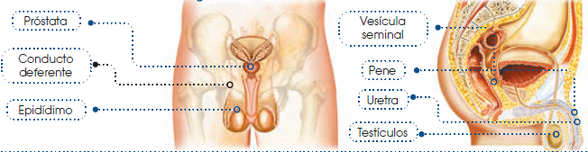
• Testículos: Son dos órganos situados fuera de la cavidad abdominal y recubiertos por el escroto. En su interior se encuentran los túbulos seminíferos, donde se forman los espermatozoides.
• Epidídimos: Son dos estructuras situadas en la parte superior de los testículos que intervienen en la maduración de los espermatozoides.
• Conductos deferentes: Son los conductos por los cuales los espermatozoides van a la uretra.
• Vesículas seminales: Son dos pequeños órganos situados encima de la próstata que producen secreciones. Estas secreciones nutren a los espermatozoides y, junto a ellos, constituyen el semen.
• Próstata: Es un órgano situado debajo de la vejiga, segrega sustancias para nutrir a los espermatozoides.
• Uretra: Es el conducto que recorre el interior del pene, por el cual los espermatozoides salen al exterior. También forma parte del sistema excretor.
• Pene: Es el órgano externo que en su extremo posee un engrosamiento denominado glande. El prepucio es el repliegue de piel que recubre el glande.
La formación de los espermatozoides
La formación de los espermatozoides tiene lugar en los túbulos seminíferos. En estos túbulos se encuentran las células precursoras de los espermatozoides, que se transforman dando lugar a estos.
Una vez formados, los espermatozoides salen de los testículos hacia el epidídimo, donde maduran.
Posteriormente pasan a los conductos deferentes, en los que se desplazan y siguen avanzando hasta la uretra.
En estos conductos, los espermatozoides acaban de madurar.
Por su parte, las vesículas seminales y la próstata producen, respectivamente, el líquido seminal y el prostático.
Durante la fase previa a la eyaculación, también intervienen las denominadas glándulas de Cowper. Estas secretan un líquido que se vierte a la uretra y que tiene la función de limpiarla y rectificar su pH para adecuarlo al paso de los espermatozoides. Este líquido también puede transportar espermatozoides, aunque en un número reducido.
Cuando se produce la eyaculación, los espermatozoides salen del sistema reproductor y estos son liberados junto con el líquido seminal y el prostático. Esta mezcla constituye el semen, un líquido blanquecino que se expulsa a través de la uretra.
En cada eyaculación se arrojan cientos de millones de espermatozoides.
La formación de espermatozoides se inicia aproximadamente cuando se alcanza la edad entre 14 y 16 años. A partir de los 50 años, la cantidad de espermatozoides que se producen empieza a disminuir.
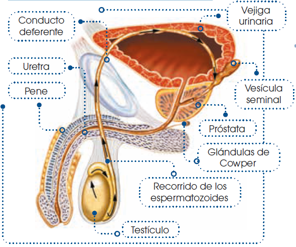
Las hormonas masculinas
En los testículos también se sintetiza la testosterona, hormona necesaria para la formación de los espermatozoides, que origina la diferenciación entre el aparato reproductor masculino y el femenino, y determina las características físicas del hombre adulto.
El líquido seminal contiene otras hormonas: las prostaglandinas, que se sintetizan en las vesículas seminales. Su función es la de estimular las contracciones del útero después de una relación sexual para facilitar el avance de los espermatozoides a través del aparato reproductor femenino.
El aparato reproductor femenino
A continuación veremos las partes del aparato reproductor femenino.
• Ovarios: Son dos órganos situados en la cavidad pélvica, encargados de la producción de óvulos.
• Trompas de Falopio: Son dos conductos, cada uno de los cuales comunica con un ovario y con el útero. Se encargan de recoger los óvulos liberados por los ovarios y conducirlos al útero.
• Útero o matriz: Es un órgano musculoso que puede ensancharse para alojar al feto en caso de embarazo. Una de las capas que lo constituyen es el endometrio, capa mucosa con muchos vasos sanguíneos que se regenera periódicamente y cuya función es proteger y nutrir al óvulo fecundado.
• Vagina: Es el conducto que comunica el útero con el exterior, sus paredes son musculosas y elásticas.
• Vulva: Es la parte exterior del sistema reproductor femenino y consta del monte de Venus, los labios mayores, los labios menores y el clítoris, pequeño órgano eréctil.
Entre los labios menores y la pared vaginal se encuentran las glándulas de Bartolino que se encargan de secretar un líquido lubricante antes del coito.
Glándulas mamarias
Estas glándulas tienen la función de producir y segregar leche para alimentar al recién nacido, por este motivo puede considerarse que forman parte del sistema reproductor femenino.
La formación de óvulos
Las células precursoras de los óvulos se encuentran en los ovarios de la mujer desde su nacimiento. Estas células precursoras interrumpen su desarrollo durante aproximadamente 12 años, momento en el que comienza la maduración del aparato reproductor femenino. A partir de este momento tienen lugar, de forma cíclica, la ovulación y la menstruación.
• Ovulación: Una de las células precursoras madura hasta dar lugar a un óvulo, que sale del ovario y es recogido por la trompa de Falopio. Este proceso recibe el nombre de ovulación.
Durante la maduración del óvulo, el endometrio se engrosa con la finalidad de albergar el óvulo fecundado.
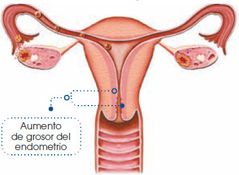
Si no es fecundado, el óvulo tiene una vida muy corta y muere en 24 horas.
La ovulación determina el ciclo ovárico, que es el tiempo transcurrido entre la maduración de un óvulo y la del siguiente. La duración media del ciclo ovárico es de 28 días.
• Menstruación: Si no se produce la fecundación, unos 14 días después de la liberación del óvulo, el endometrio se desprende. Esto provoca una hemorragia denominada menstruación, la que dura aproximadamente 4 días y consiste en la expulsión por la vagina de sangre y otros componentes que formaban el endometrio. La expulsión es más intensa en los primeros días y poco a poco se detiene.
La menstruación determina el ciclo endometrial, que es el tiempo que transcurre entre el inicio de una menstruación y el inicio de la siguiente. La menstruación se origina al rededor de 14 días después de la ovulación.
En el esquema se muestra la interrelación entre los ciclos ovárico y endometrial teniendo en cuenta una duración de 28 días.
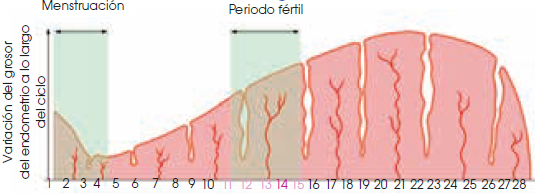
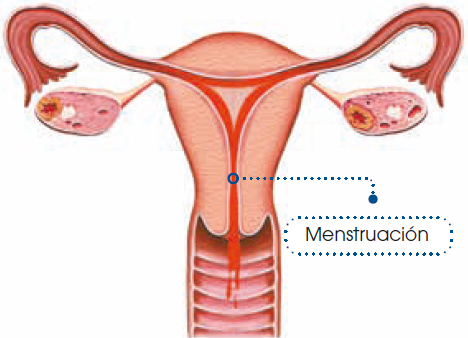
Este se calcula teniendo en cuenta que, por un lado, el óvulo liberado sobrevive 24 horas y, por otro, que los espermatozoides sobreviven hasta 72 horas en el aparato reproductor femenino. Por tanto, el período fértil está comprendido entre tres días antes y un día después de la ovulación.
La edad fértil en las mujeres se inicia con la primera menstruación o menarquia a partir de los 12 o 14 años. Aproximadamente entre los 45 y los 55 años, los ovarios dejan de madurar óvulos, cesan las menstruaciones y comienza el período denominado menopausia.
Las hormonas femeninas
En los ovarios se sintetizan los estrógenos, que son los encargados de proseguir el proceso de maduración de los óvulos y de regenerar el endometrio después de la menstruación.
También se sintetiza la progesterona, que prepara el endometrio para la implantación del óvulo. Si no se produce la fecundación, la síntesis de esta hormona se detiene.
Fecundación, embarazo y parto en los seres humanos
La fecundación, el embarazo y el parto son tres procesos relacionados con la función de reproducción que tienen lugar en el interior del cuerpo de la mujer.
• La fecundación es la unión de un óvulo y de un espermatozoide en el interior del sistema reproductor femenino.
La unión de las dos células es posible si, durante el período fértil de la mujer, se realiza el coito, que consiste en la introducción del pene erecto en el interior de la vagina, y la eyaculación, es decir, la expulsión del semen.
Veamos qué ocurre a partir del momento que tiene lugar la eyaculación.
En una eyaculación se liberan entre 200 y 300 millones de espermatozoides que quedan depositados en la entrada del útero de la mujer. A partir de este momento, los espermatozoides avanzan hacia las trompas de Falopio gracias a los movimientos de su cola.
Unas decenas de espermatozoides consiguen llegar a las trompas de Falopio. Si en ese momento hay en ellas un óvulo maduro, se puede producir la fecundación entre este óvulo y solo uno de los espermatozoides. Como consecuencia de esta unión se formará la célula huevo o cigoto. A partir de este momento se inicia el embarazo.
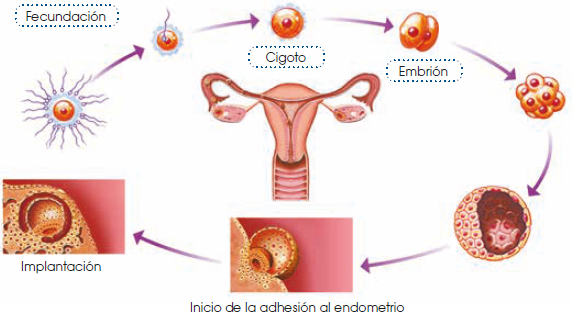
Cuando el cigoto se divide por primera vez, da lugar al embrión que se desplaza desde las trompas de Falopio hacia el útero, mientras realiza sucesivas divisiones celulares. Cuando el embrión llega al útero se produce la implantación; es decir, el embrión se adhiere al endometrio, donde se desarrollará para formar un nuevo ser. La implantación tiene lugar 7 u 8 días después de la fecundación.
A partir de la implantación del embrión en el útero empiezan a desarrollarse la cavidad amniótica, la placenta y el cordón umbilical.
• Cavidad amniótica: Es la cavidad que contiene el embrión. Está constituida por la membrana amniótica y el líquido amniótico. Esta cavidad mantiene hidratado al embrión, lo protege de los golpes y de los posibles cambios de temperatura, a la vez que amortigua los movimientos del cuerpo de la madre.
• Placenta: Es un órgano situado en el exterior de la membrana amniótica y su función es comunicar el sistema circulatorio de la madre y el del embrión. También actúa como filtro de microorganismos o de sustancias nocivas.
• Cordón umbilical: Es un tubo largo y flexible que une el ombligo del nuevo ser con la placenta. Contiene en su interior dos arterias y una vena. El embrión recibe a través de estas arterias los nutrientes y el oxígeno que contiene la sangre de la madre. Las sustancias tóxicas, como el dióxido de carbono, pasan a través de la vena hacia la placenta, donde la sangre de la madre las recogerá para ser eliminadas.
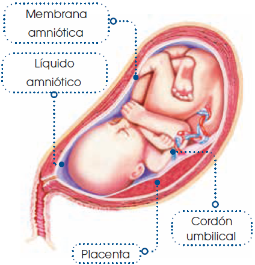
Hasta el último tramo del primer trimestre hablamos de embrión. Cuando se empiezan a diferenciar las principales estructuras anatómicas, el embrión pasa a denominarse feto hasta el final del embarazo.
A continuación, veremos cómo se desarrolla el embrión y el feto a lo largo del embarazo.
- Primer trimestre:
Se empiezan a diferenciar la mayor parte de los órganos. Por ejemplo, se forman el sistema nervioso, el corazón, los dedos de manos y pies, etcétera. Al final del trimestre el embrión pesa unos 20 g y mide unos 10 cm, tiene aspecto humano y empieza a moverse.
- Segundo trimestre:
El feto ya tiene todos los órganos desarrollados excepto los pulmones, que aún no están preparados para respirar. Se mueve mucho y se chupa el dedo, la madre puede percibir los movimientos.
Al final del trimestre pesa aproximadamente 900 g y mide unos 32 cm.
- Tercer trimestre:
Los pulmones se preparan para respirar. Debido al crecimiento del feto, este ocupa, todo el espacio disponible en el útero y se mueve muy poco. Hacia el final del embarazo, se sitúa cabeza abajo y se encaja en la pelvis de la madre. En el momento de nacer, el peso medio es de 3-3.5 kg y mide unos 50 cm.
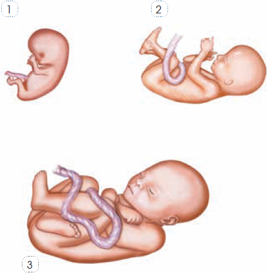
La ecografía es una técnica muy utilizada en la actualidad para llevar a cabo un control del proceso del embarazo. A lo largo del embarazo, se recomienda un mínimo de tres ecografías. La ecografía permite determinar la madurez del feto y observar los latidos del corazón y sus movimientos.
Cuando han transcurrido las 40 semanas de embarazo, tiene lugar el parto, que es la salida al exterior del feto y de las membranas que lo rodean. Las señales que indican el inicio del parto son:
• Rotura de la membrana amniótica: La rotura de esta membrana libera el líquido amniótico, a este hecho se le conoce comúnmente como romper aguas.
• Inicio de las contracciones uterinas: Al principio son contracciones suaves y ligeramente dolorosas, pero, al transcurrir el tiempo, a se van haciendo más frecuentes e intensas.
A partir de este momento tienen lugar tres fases: la dilatación, la expulsión y el alumbramiento.
• Dilatación: Debido a las contracciones uterinas, cada vez más frecuentes, se va ensanchando el cuello del útero. Cuando este alcanza los 10 cm de diámetro, la fase termina.
• Expulsión: Prosiguen las contracciones uterinas y, normalmente, entre tres y cinco horas después comienzan los dolores de expulsión, que se producen cuando la cabeza del feto presiona sobre la vagina para salir. En el momento del nacimiento, primero aparece la cabeza, luego un hombro y, rápidamente, el resto del cuerpo.
En ese momento se pinza el cordón umbilical para evitar hemorragias y, después, se corta.
• Alumbramiento: Consiste en la expulsión de la placenta, tiene lugar minutos después de la salida del feto.
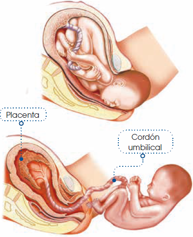
Las hormonas durante el embarazo y el parto
En el embarazo, la placenta segrega estrógenos y progesterona. Los estrógenos favorecen el crecimiento del útero y el desarrollo de las glándulas mamarias. La progesterona mantiene la consistencia de las paredes del útero y evita que se produzcan contracciones.
En el parto, las glándulas suprarrenales del feto segregan cortisol que provoca que aumente la formación de estrógenos y que disminuya la síntesis de progesterona. Por esto, empiezan las primeras contracciones uterinas y el hipotálamo de la madre segrega oxitocina, que estimula las contracciones y favorece la recuperación del tamaño del útero y estimula las glándulas mamarias.
Síntomas del embarazo
El cuerpo de la mujer pasa por varios cambios a medida que el bebé crece y se desarrolla. Las hormonas que interactúan en la mujer también cambian. A lo largo de esta etapa, estas modificaciones generalmente van acompañadas de dolores y molestias, además de que podrían presentar síntomas únicos o cambiantes.
Aun así, muchas mujeres embarazadas dicen sentirse más saludables.
Fatiga
Durante el embarazo la mujer va a estar mucho más cansada e inactiva. Sin embargo, ellas tienden a estar cansadas los primeros meses y se reactivan en la etapa final. Una gran ayuda para contrarrestar el cansancio es una dieta balanceada, ejercicios y descanso, también ayuda a que se sienta menos cansada. Otra herramienta útil para evitar la fatiga es el tomar siestas cortas o recesos para descansar a lo largo del día durante todos los días.
Problemas con la micción
Al principio del embarazo, es muy probable que vaya más veces al baño.
A medida que su útero crece y se eleva en el abdomen, la necesidad de orinar puede disminuir. Sin embargo, seguirá orinando más durante todo el embarazo. Esto significa que la mujer tiene la necesidad de beber más agua y sentirse mucho más sedienta que cuando no estaba embarazada.
En las semanas finales del embarazo, el bebé va descendiendo a la pelvis. La mujer tendrá que orinar mucho, pero el volumen será bastante reducido ya que por la presión que el bebé ejerce en la vejiga la mujer pierde la cantidad de contención de líquido.
Acidez gástrica A lo largo del embarazo, los alimentos que consume la madre permanecen un tiempo más prolongado a lo habitual en los intestinos y en el estómago. Esto le podría causar acidez gástrica; sin embargo, existen varias formas de contrarrestarla:
• Consumir comidas en porciones pequeñas.
• Evitar alimentos picantes y grasosos.
• Antes de acostarse, evitar ingerir mucho líquido.
• Después de comer, evitar hacer ejercicio por al menos dos horas. Tratar de no acostarse y descansar después de la comida, esperar una hora mínimo.
Hinchazón
La hinchazón es una molestia muy común, pero hay formas de tratarla:
• Hacer ejercicios simples: levantando las piernas y apoyándolas en el vientre para ayudar a la circulación.
• Acostarse de un costado en la cama.
• Es recomendable usar medias de compresión o de descanso.
• Reducir de la dieta los alimentos salados, ya que la sal funciona como una esponja y ayuda a que el cuerpo retenga más líquidos.
• Evitar hacer demasiado esfuerzo durante las defecaciones. Esto puede provocar hemorroides muy dolorosas.
Generalmente, la hinchazón en las piernas viene también acompañada de dolores de cabeza o hipertensión arterial que puede causar una complicación médica grave y de cuidado que se llama preclampsia.
Lactancia materna
En la última fase del embarazo las mamas se preparan para segregar leche. Al nacer el niño, los acinos ya tienen preparada una primera secreción denominada calostro. Este es el primer alimento del recién nacido; contiene gran cantidad de proteínas y anticuerpos que le servirán de defensa. La composición de la leche, posteriormente, varía, ya que contiene más grasas y glúcidos.
Se recomienda que el recién nacido se alimente de leche materna, por lo menos hasta los 4 meses de edad. En ocasiones, cuando la lactancia materna no es suficiente para la nutrición del bebé, se complementa con leches maternizadas. De forma progresiva, se introducirán otros alimentos.
Además de los síntomas ya mencionados, que resultan ser los más comunes. Existen otros que también se pueden presentar, estos son: Flujo vaginal, estreñimiento, sangrados nasales y de las encías, venas varicosas y hemorroides y problemas respiratorios.
Mecanismo y regulación hormonal de la lactancia
El mecanismo de la lactancia se basa en la succión que efectúa el recién nacido en el pezón materno. El reflejo de succión es un comportamiento innato en el ser humano.
• El estímulo de la succión se transmite al sistema nervioso central, donde se procesa, iniciando la actividad del hipotálamo. Este segrega la hormona oxitocina, que provoca la contracción de fibras musculares que rodean el tejido glandular de las mamas y producen la salida de la leche.
Al mismo tiempo, la oxitocina origina una reducción del tamaño del útero, que había aumentado durante el embarazo.
• La hipófisis, activada por neurohormonas del hipotálamo, produce hormona prolactina, responsable de la formación de leche en los acinos mamarios.
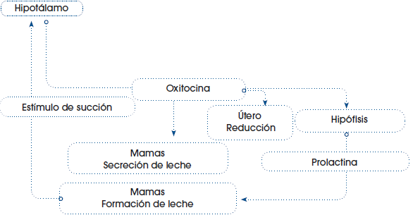
La lactancia está controlada por el sistema nervioso central. Debido a ello, el estado de ánimo de la madre influye directamente en el proceso, por lo que es recomendable dar de mamar en las condiciones más tranquilas posibles.
Ventajas de la leche materna
La leche materna es la mejor fuente de alimento y protección para el bebé, como se mencionó, le brinda defensas y nutrición hasta que el bebé desarrolle anticuerpos que lo protejan; además que calma la sed incluso en climas muy cálidos.
Cuando al niño se le da, aguas, jugos o tés durante los primeros 6 meses se está aumentando el riesgo de que el niño o niña sufra de diarreas u otras infecciones que no sucede con la leche materna.
La leche materna tiene muchos micronutrientes que son necesarios a lo largo del crecimiento y desarrollo, entre ellos están:
• Vitaminas, como la A, B, C para que el niño crezca saludable y esté protegido.
• Fósforo y calcio para que tenga huesos sanos y fuertes.
• Hierro para mantener la energía.
• Proteínas para protegerlo contra las enfermedades, para el crecimiento y el desarrollo de la inteligencia.
• Grasas, las grasas de la leche materna protegerán al niño, cuando sea mayor, de padecer enfermedades del corazón y de la circulación. Además, favorecen su inteligencia.
• Azúcares para que tenga energía y para alimentar al cerebro. La leche de la madre es el único alimento que nutre al niño o niña completamente durante los primeros 6 meses de vida y el único alimento que le da protección sostenida y completa durante los primeros 2 años.
Además, la leche también previene enfermedades como:
• Las diarreas y la deshidratación
• Infecciones respiratorias, como la bronquitis y la neumonía
• El estreñimiento
• Los cólicos
• Las alergias
• Las enfermedades de la piel, como los granos y el sarpullido
• El sarampión
• El cólera
• Desnutrición
• La diabetes juvenil
• Deficiencia de micronutrientes
Experimento
Tema:
Observación de la gemación en las levaduras.
Investigamos:
Las levaduras son hongos unicelulares de forma oval. Poseen una organización celular eucariota y tienen un metabolismo heterótrofo. Una especie representativa es la Saccharomyces cerevisiae, que se utiliza en el proceso de panificación y en la elaboración de vinos y cervezas.
Consulta su modo de reproducción y dónde podemos encontrar estos organismos.
Objetivo:
Describir las características celulares de la levadura del pan y observar el proceso de reproducción asexual por gemación.
Materiales:
• levadura de panadero • solución de glucosa al 5%
• azul de metileno
• tubo de ensayo de 5 ml
• lanceta
• pipetas Pasteur desechables
• portaobjetos y cubreobjetos
Proceso:
1. Depositamos en un tubo de ensayo 1 ml de solución de glucosa al 5%.
2. Añadimos un poco de levadura de panadero utilizando una lanceta y la mezclamos suavemente.
3. Con ayuda de una pipeta Pasteur, depositamos una gota de la mezcla anterior en un portaobjetos que esté bien limpio y desengrasado.
4. Colocamos el cubreobjetos, evitando que queden burbujas de aire, y observamos la muestra en el microscopio, empezando por el objetivo de menor aumento hasta llegar al de 40x.
5. Repetimos el procedimiento anterior, pero ahora fijamos la muestra calentándola ligeramente sobre la llama del mechero de Bunsen.
6. Añadimos unas gotas de azul de metileno y dejamos dos minutos para que el colorante tiña la muestra.
7. Lavamos cuidadosamente el portaobjetos bajo el grifo para eliminar el exceso de colorante. Lo dejamos secar al aire durante unos minutos.
8. Observamos de nuevo el microscopio.
9. Localizamos algunas células en división.
10. Dibujamos la morfología de las células de la levadura del pan y el proceso de gemación a diferentes aumentos.
Cuestiones:
11. ¿Qué diferencias observas entre la muestra teñida y la que no lo está?
12. ¿Crees que las células hijas tendrán una dotación genética muy diferente de la de la célula madre? ¿Por qué?
13. Los hongos son organismos heterótrofos. ¿Qué significa esto? ¿Por qué hemos añadido a las levaduras una solución de glucosa?